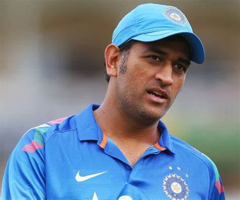

Hello Welcome to HTML!! hi
Bye
Mahendra Singh Dhoni born 7 July 1981 is an Indian former international cricketer who was captain of the Indian national cricket team in limited-overs formats from 2007 to 2017 and in Test cricket from 2008 to 2014. He is also the current captain of CSK in the IPL. He led India to victory in three ICC trophies 2007 ICC World Twenty20, 2011 Cricket World Cup and 2013 ICC Champions Trophy, the most by any Indian captain. Under his captaincy India also won 2010 and 2016 Asia Cup. Also under his leadership India won 2010 and 2011 ICC Test Mace and 2013 ICC ODI Championship. A right-handed wicket-keeper batsman. He scored over 10,000 runs in One Day Internationals, with the reputation as one of the best finishers in the game. He is also one of the greatest wicket-keepers in the history of cricket.
